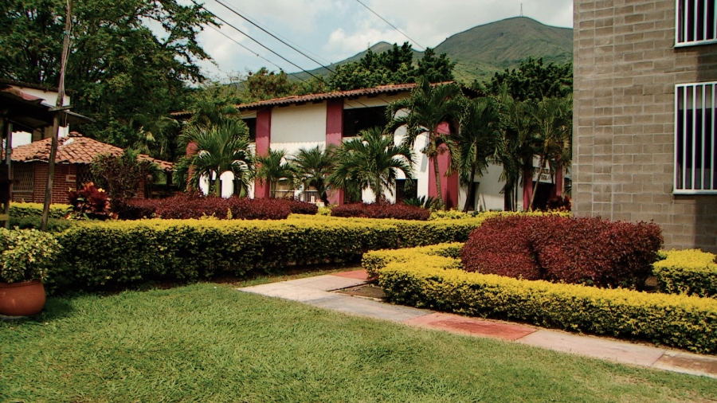
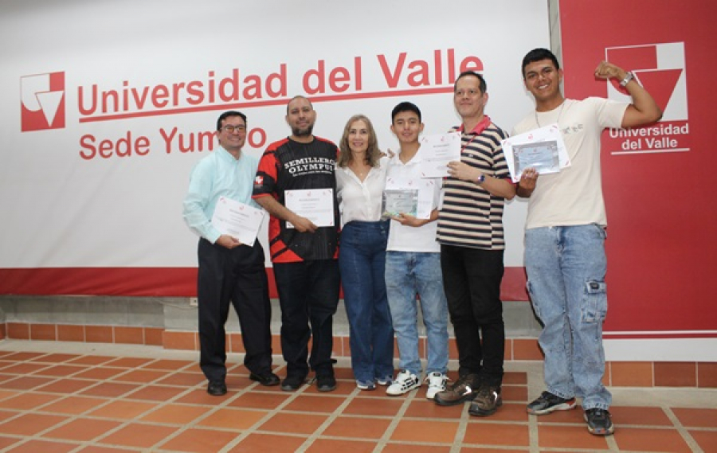
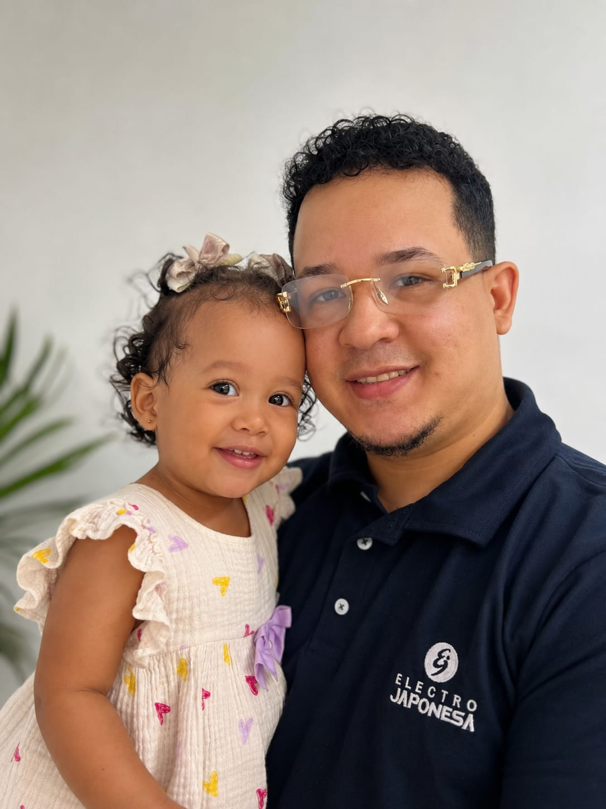
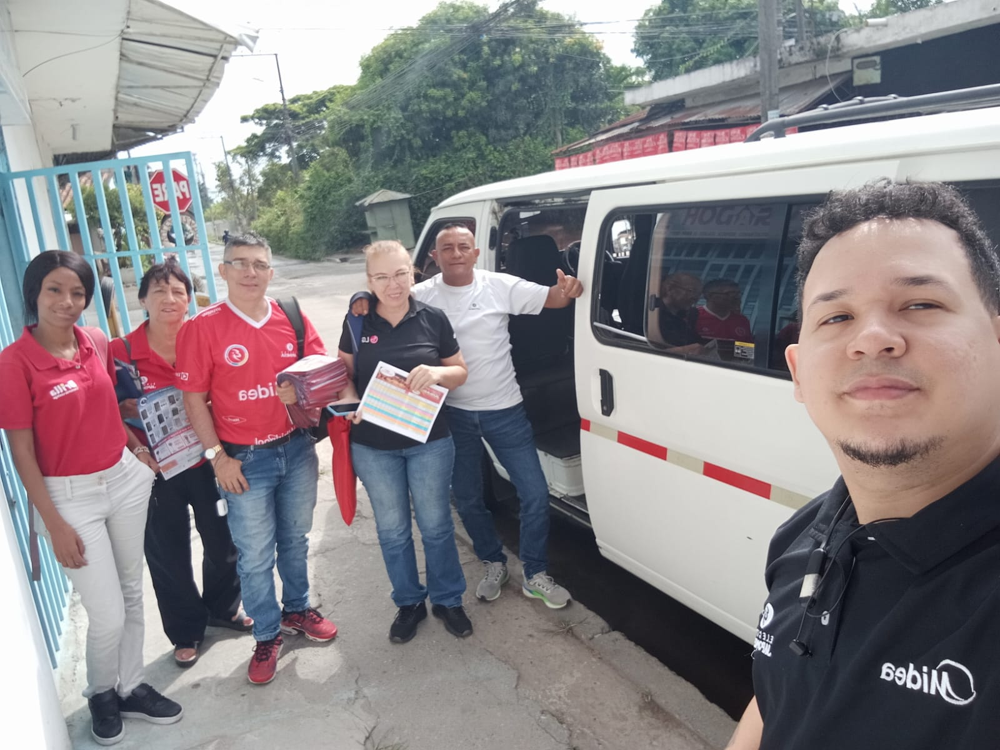
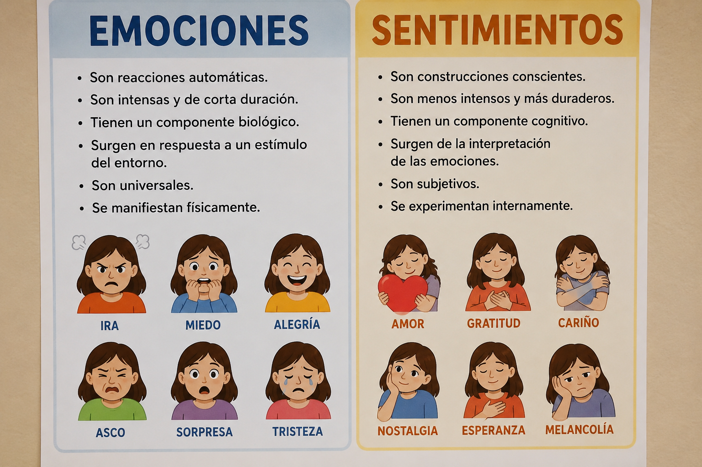
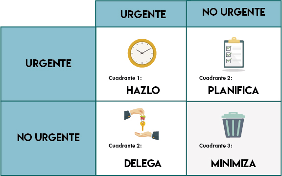
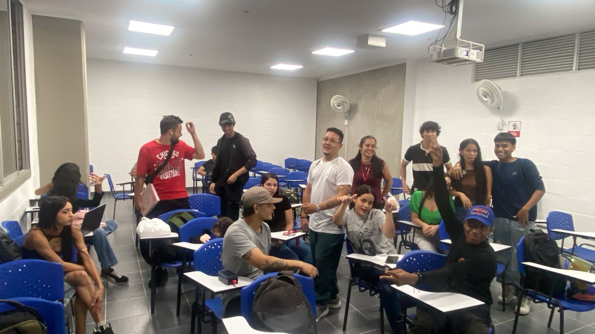
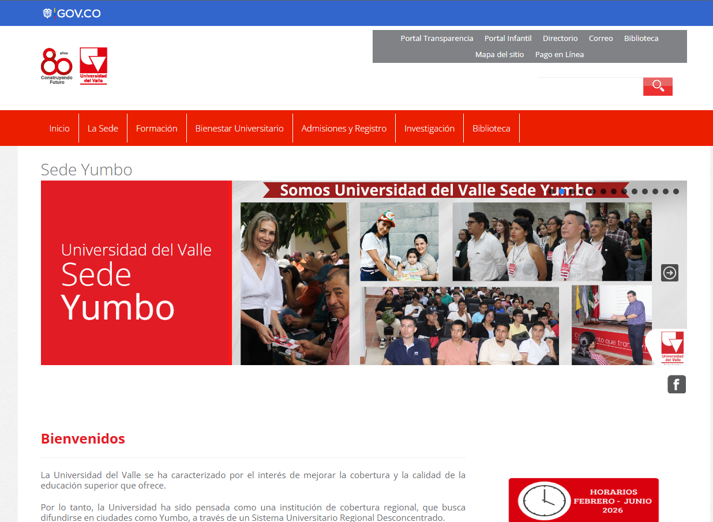
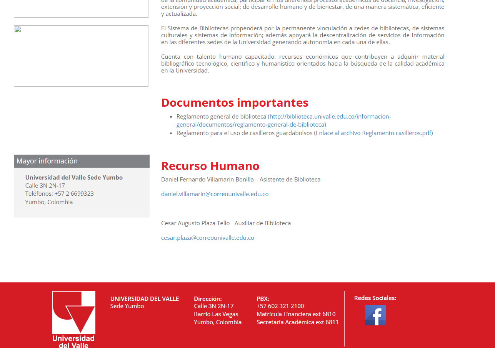
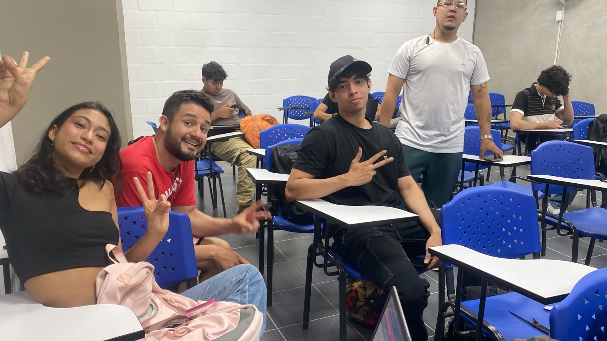

Portafolio INSERCION A LA VIDA UNIVERSITARIA - IRWING MESIAS
Bienvenidos a mi portafolio
Introducción
Primero quiero comenzar con lo que para mí significa inserción a la vida universitaria:
- La inserción a la vida universitaria la entiendo como un proceso estratégico de adaptación, donde el estudiante deja de ser un receptor pasivo y asume el rol de gestor de su propio desarrollo. No se trata solo de ingresar a una institución, sino de aprender a operar dentro de un sistema que exige disciplina, criterio y enfoque en resultados.
Desde una visión más analítica, esta materia representa el punto de partida para construir una mentalidad orientada al crecimiento: organizar el tiempo, tomar decisiones conscientes y entender que cada acción académica tiene un impacto directo en el futuro profesional.
En esencia, la vida universitaria funciona como un entorno de entrenamiento, donde se desarrollan habilidades que trascienden el aula, preparándonos no solo para aprobar materias, sino para competir, adaptarnos y generar valor en contextos reales.
**"citando a KANT - "Atrévete a saber" (Sapere aude). Ten el valor de usar tu propia razón"**


Perfil
Irwing Andrés Mesías. Padre una hermosa niña, Estudiante de filosofía, programación y profesional del área comercial, enfocado en negocios. Apasionado por la lectura, la tecnología y la escritura, combinó pensamiento crítico con acción práctica para generar valor y crecimiento continuo.


La Universidad donde estudio
Universidad del Valle - Sede Yumbo
En la carrera de: Tecnología en Desarrollo de Software (TEDESOF)
Descripción: Universidad pública fundada en 1945, reconocida por su calidad académica y su aporte al desarrollo regional y nacional.
MISIÓN:
Formar profesionales competentes, críticos y comprometidos con el desarrollo sostenible, a través de una educación de calidad, investigación innovadora y extensión social que promueva la transformación de la sociedad.
VISIÓN:
Ser una universidad líder en la formación de profesionales integrales, reconocida por su excelencia académica, innovación y compromiso social, contribuyendo al desarrollo sostenible y al bienestar de la comunidad.
¿Quieres saber mas sobre nuestra UNIVERSIDAD? Visita estos enlaces:
Este módulo lo entiendo como una base de autogestión. Diferenciar emociones y sentimientos, junto con el manejo del estrés
(como en el ejercicio con Avicii), me permitió aterrizar cómo las decisiones y el rendimiento también pasan por el estado mental.
La gestión del tiempo, especialmente en jornada nocturna, la veo como una habilidad clave para sostener disciplina y productividad.
Emociones vs Sentimientos
Comprendí la diferencia entre respuestas inmediatas (emociones) y estados más duraderos (sentimientos),
lo que permite tomar decisiones con mayor control y criterio

Manejo del estrés
AQUÍ HICE UN EJERCICIO DE PONER MI ARTISTA FAVORITO Y SELECCIONAMOS A AVICII. A través del ejercicio con Avicii,
entendí cómo factores externos e internos influyen en el estrés,
y la importancia de canalizarlo de forma consciente para no afectar el rendimiento.
Gestión del tiempo
Aprendí a organizar mejor mis actividades, priorizando tareas y optimizando el tiempo para mantener la productividad en un contexto exigente.


Módulo 2
Más que teoría, este módulo fue entender cómo funciona el sistema. Conocer la estructura administrativa, recorrer el campus
y entender el reglamento me dio claridad para moverse estratégicamente dentro de la universidad, optimizando procesos
y evitando fricciones innecesarias..
CONOCER ADMINISTRATIVAMENTE LA UNIVERSIDAD:
Identifiqué cómo está estructurada la universidad y cómo funcionan sus procesos internos.

RECORRER EL CAMPUS DE LA UNIVALLE YUMBO:
Reconocí los espacios clave, facilitando la adaptación y el desplazamiento dentro del entorno universitario.

REGLAMENTO, NORMATIVAS, ARTÍCULOS:
Entendí las reglas del sistema, lo que permite actuar con claridad y evitar errores académicos o administrativos.

Módulo 3
La comunicación institucional la veo como una herramienta operativa. Saber usar correctamente correos,
PQRS y canales formales no solo facilita la gestión, sino que proyecta profesionalismo y mejora la eficiencia en cualquier entorno.